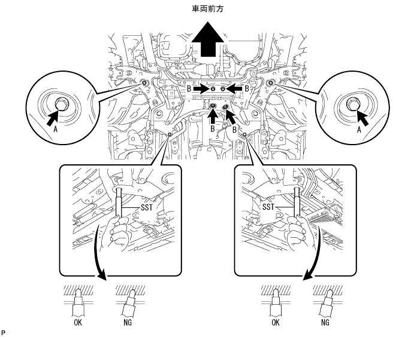
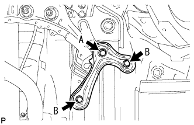
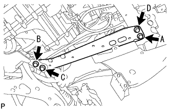
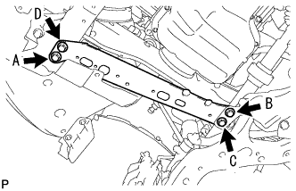
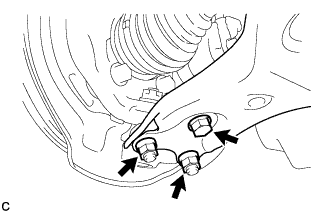
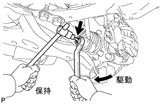
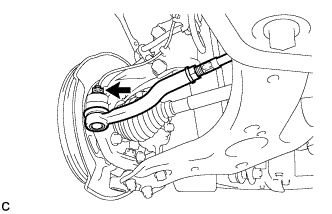
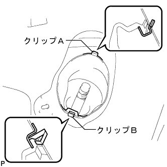
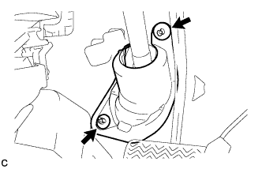
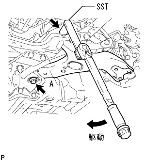

Front Suspension Arm Sub-assembly Lower NO.1 LH Installation |
| 1. Temporarily Tighten Front Suspension Arm Sub-assembly Lower NO.1 LH |
 |
Temporarily tighten front suspension lower arm NO.1 LH to the front suspension crossmember with the 2 bolts and nut.
| 2. Install Front Suspension Crossmember Sub-assembly |
 |
Support the front suspension crossmember with a transmission jack or equivalent.
While alternately inserting SST into the reference holes on the RH and LH sides of the front suspension crossmember, tighten the 2 bolts A on the RH and LH sides, and lower the transmission jack.

Tighten the B2 bolts and B2 nuts to the specified torque in several steps.
| 3. Install Front Suspension Member Brace Rear LH |
 |
Install the front suspension member brace rear LH with the 3 bolts.
| 4. Install Front Suspension Member Brace Rear RH |
| 5. Install Front Suspension Member Reinforcement LH |
 |
Install the front suspension member reinforcement LH with the 4 bolts.
| 6. Install Front Suspension Member Reinforcement RH |
 |
Install the front suspension member reinforcement RH with the 4 bolts.
| 7. Install Engine Front Mounting Bracket Reinforcement Lower |
 |
Install the engine front mounting bracket reinforcement lower with the 2 bolts.
| 8. Connect Front Suspension Arm Sub-assembly Lower NO.1 LH |
 |
Push down front suspension lower arm No.1 LH to install the front lower ball joint LH, and tighten the bolt and 2 nuts.
| 9. Connect Front Suspension Arm Sub-assembly Lower NO.1 RH |
| 10. Connect Front Stabilizer Link Assembly LH |
 |
Connect the front stabilizer link assembly LH to the front stabilizer bar with the nut.
| 11. Connect Front Stabilizer Link Assembly RH |
| 12. Connect Tie Rod End Sub-assembly LH |
 |
Connect the tie rod end LH to the steering knuckle and install it with the castle nut.
Install the cotter pin.
| 13. Connect Tie Rod End Sub-assembly RH |
| 14. Install Engine Under Cover Rear LH |
Install the engine under cover rear LH with the 5 clips.
| 15. Install Engine Under Cover Rear RH |
| 16. Install Engine Under Cover NO.2 |
| 17. Install Engine Under Cover NO.1 |
| 18. Check Front Tires Straight-ahead Position |
| 19. Connect Steering Column Hole Cover Sub-assembly NO.1 |
 |
Insert clip A, hook clip B onto the top surface of the panel, and connect the steering column hole cover to the floor panel.
| 20. Connect Steering Intermediate Shaft Assembly NO.2 |
 |
Align the matchmarks and connect steering intermediate shaft assembly No.2 to the steering intermediate shaft.
 |
Install the bolt.
| 21. Install Column Hole Cover Silencer Sheet |
 |
Install the column hole cover silencer sheet with the 2 clips.
Put the floor carpet back in place.
| 22. Install Front Tire |
| 23. Stabilize Suspension |
Lower the vehicle and bounce it up and down several times to stabilize the front suspension.
| 24. Fully Tighten Front Suspension Arm Sub-assembly Lower NO.1 LH |
 |
Using SST, fully tighten the bolts.
Fully tighten bolt A.
| 25. Inspect and Adjust Front Wheel Alignment |
)